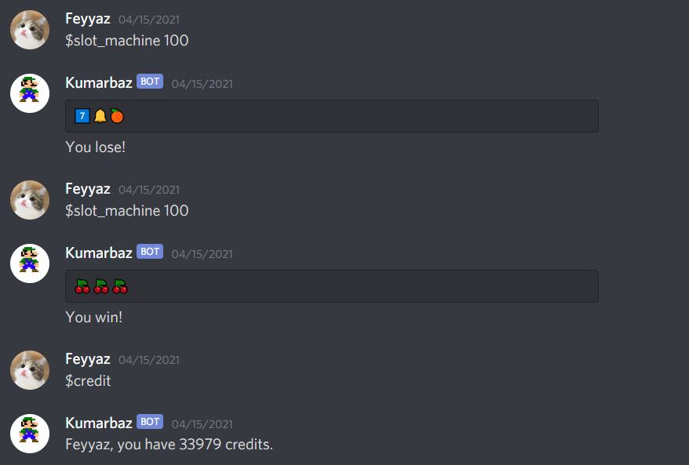
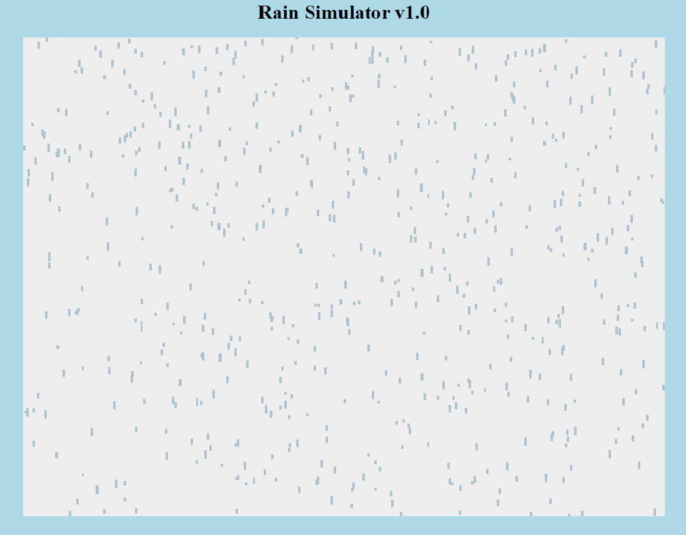
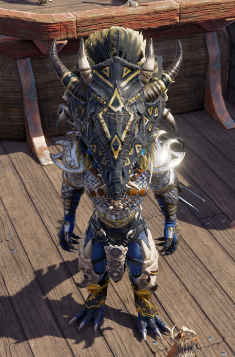

Feyyaz's Random Blog
Hello everyone, welcome to my blog! I have zero experience in blogging and I thought I might give it a try.
I will be mostly writing about my days and my thoughts. I am not sure if it'll be a daily thing, but I will try
my best to write as often as I can.
Whoa, it's been a very long time. Actually I wasn't really busy. Guess I forgot this blog existed. I've been up to a lot of stuff. Since midterms passed
I don't have much things to do besides some minor assignments. So, I have a lot of time. I am working on a couple projects. First one is a discord bot.
I created one because I thought it would be fun. And, I wasn't wrong. As time passed I added the bot to a server with my friends. It can do a lot of silly things
but I thought it should have a specific purpose. I didn't want to make a bot like Music Bots because they are so common. So, in the end I decided to make a gambling
bot. I made a credit system where everytime you send a message to the server you would get 1 credit. I store all the credit information in a database,
(it's actually a text file LOL. But atleast it works). At the moment, there are coin flip, blackjack, slot machine and a betting game which we mostly use for our
HotS games, (the game I've been mentioning in the previous entries). Here's a photo of what the bot can do and what it looks like.

Kumarbaz means gambler in my language. And for the time being since I wasn't able to find a photo, The bot has Luigi as its profile photo. By the way,
I was really lucky there with the slot machine win. I also started a Java project with my friend. We are trying to build a Game Engine. Nothing very complicated.
Since we don't want to build something like Unity, Unreal or Godot. However we still want to give it a try. It's a fresh project so, there's not much to talk
about yet. The project I'm doing for the univeristy is also going well, (although, we hit some bumpy rodes, we're still doing our best). I know I haven't been writing
for 2 months and by then I would have some things to talk about, well I actually don't. In the next entry, I want to talk about the Discord Bot and the Game Engine
in more detail and give you updates. Until then, See ya!
Hey everyone. I'm back with another entry exactly one week later. I'm pretty much done with all the homework assignments. So, this week was a really
relaxing week for me. Though, I probably shouldn't get too much comfortable becuase midterms are coming up. I hate exams, but atleast they are better than
homeworks in my opinion. I'd rather be studying for exams than rushing to finish assignments. About my focusing issues, I definitely still have it but not
as much as last week. I'm starting to atleast give some of my attention to classes now that exams are coming up.
This week I got really bad news. I learned that my CS 101 instructor David, had passed away. Apparently he had health issues and that was why he couldn't
teach CS 102 this semester. This bad news really got to me, but I'm feeling better now. We started working on our term projects together. We are at the very
early stages though. We aren't even at the design stage yet. We wrote something like a proposal for our project. Other than that we had a card game assignment.
I must admit, it was a very stupid card game. Still I had fun working on it. That was also a group assignment and I did it with my friends from the project
group.
Other than homeworks and university, I've been having fun. We got eliminated from the HotS tournament I was talking about last week. It was really exciting
and fun though. Since I've finished playing Persona 4 Golden, I was meaning to start Persona 5 Royal. But I can't play it on the PC and I really don't want to
get my PS4 out. I think for now I'm gonna stick to playing little indie games. I don't wanna invest a lot of time on games, so short games are my ideals right
now. Also, I found a new sit-com watch alongside Hellsing. It's called Community, and I'm loving it so much. But I'm afraid, I'm watching it really fast.
So, I might finish it soon. Well, that's ok cause I'm thinking of re-visiting some animes and sit-coms. That's it for this entry. Thanks for sticking around!
Hello, there. It's been some time. In my defense, I have so much on my plate right now. There's a lot of assignments I need to take care of. Also
I can't really pay attention to classes nowadays, so I miss the topics. I have some catching up to do. In short I'm busy and that is stressing me a lot.
That's actually why I decided to write today. If I write the stuff that's going inside my head, I might feel a bit better.
First of all, the only fun assignment I had in this mess was the Hangman Game. They made us work in groups and each group worked on a different part
of the game. Our group worked on the getter methods and some methods indicating game over and losing state. After group works, everyone were prompted
to individually put the parts together to have the finished game. Other than that, for our lab assignment, we implemented polynomials and some of its
methods in Java. Ah, the projects is finally assigned. We got the 'Organizer for Travelers' description which was our first choice. I'm happy that we got
that one.
Oh, I finished playing Persona 4 Golden. I think this is the second time I finished a game in the hardest difficulty possible, (The first one being
Last of Us). Also, I joined a tournament with my friends. It's for a MOBA game called Heroes of the Storm. It's not popular as DotA 2 and LoL as you might
guess. So far we won the first round and lost the second round. We have a match later today. If we lose it, we're gonna be eliminated. But it's ok, because
we had a lot of fun. This was the first time I participated in a competitive game tournament. It was a really nice experience for me.
I finished watcing some TV shows as well. B99 was still awesome as ever in the second run. And, Korra was ok too. Not awesome, but ok. It wasn't that
satisfying. Now that I finished those, I'm looking for new things. I already have an anime on my radar called Hellsing. It's seems like a horror anime which
is interesting. Other than that, I'm looking for a new sit-com to watch. Sit-coms are the best time killers, in my opinion.
Well, I gotta go for now. I really need to start studying somehow. An essay-writing assignment is coming up this week and to be honest, I don't have the
slightest idea on how to write. Since everything is online, nothing feels real. That's why I can't focus. Anyways, this was me just scattering my thoughts and
feelings :D. See you later soon. :)
So yeah, I guess I'm writing on a weekly basis now. Because most of the times, I forget it. Now that the semester started, I'm even more forgetful.
Anyways, I've been trying to adapt to my classes. I'm really glad I have no biology anymore but since some of my instructors changed, I'm kind of bummed.
For example, I can't understand what my Math132 teacher is saying nor I can read his hand writing. I was also demoralized because of my CS instructor
changing. But to be honest, I like the new instructor as well. I am having a hard time studying and finishing assignments at the moment, and I'm still
trying to adapt to that and concentrate. And, hopefully I will eventually.
I spend most of my time playing Divinity 2 and Persona 4 Golden (So close to finishing Persona) or I watch TV shows and YouTube videos. I currently
started re-watching B99 and alongside it I'm watching Legend of Korra. I love B99 and Andy Samberg and I'm really glad I started watching it again.
About LoK, I thing it's great. Of course, it's not good as The Last Airbender, but I'm having fun with it so far. My only complaint is that the villain
keeps changing every book. So, the story is not really stable. At least, that's what I think.
And oh, about the CS102 project, I found great people to work with. We are allowed to propose a project or choose from the existing ones. It seems
like we are not going to propose although there were some good ideas. I proposed a game engine idea which has a easy-to-understand scripting language
and it has its own pixel art and music editor. And, you can implement them easily into your game. I may try to attempt this on my own alongside the
group project. From the existing ones we chose organizer for travelers, a smart calendar, or a social platform for sharing items. We're going to be asked
to make one these.
Lastly, I dual-booted my computer last week. It seemed like most of the developers are using Linux. So, decided use it as well. And, I chose to
dual-boot with Ubuntu. I'm really liking it so far. Probably because this is the first time I'm using an OS other than Windows. And I'm trying to get
everything done with the command line, so I can be more familiar with the Terminals. That's about it. See you at the next entry.
Hello, it's been a while. I said I would write an entry last wednesday but I was way to tired and lazy. Besides I didn't have interesting things to
talk about. Today, my lessons were supposed to start, but due to a issue about CS102 today's lessons were cancelled. Yay, one more day to relax?
It really doesn't matter at this point. I really feel demoralized now that my CS102 instructor is going to change. One good thing though. My schedule has
only 4 days of class. So I'm pretty free, every monday this semester. And, I am going to write more entries now with the semester is starting.
I kinda have an idea for a big project but I never really started on it. Might as well save that idea for CS102 term project. In my first CS101 class
our instructor showed us a term project from the past. It was about folding paper and cutting shapes on it and I thought that was really creative.
And with my project this semester, I wanna acheive the same thing. About Java, I did take a peak to how GUIs work in Java, and I also did some exercises
on Java to not get rusty.
I also did some Web Developing which I think is very fun. I added that random generation thing I was talking about for my DnD Sheet Generator project.
Now, you can create a sheet with randomizing nearly every aspect. I went outside of plain JavaScript and learned some Angular JS. I realized these kinds of
frameworks can really make your job easier. Using Angular JS, I made a DPS calculator for a game I play. It basically has a lot of characters, so I made a
template of how the DPS calculator is going to look for all of them. It took about an hour or two whereas if I used plain JavaScript it would take way much
more time. So, I kinda experienced the importance of frameworks. Other than that, I made small projects related to physics. One of them lets you experiment
elastic collision. A cool fun-fact about that: Every time one object's mass gets multiplied by 100 the number of collision between to objects will give you
the digits of pi. I found that pretty interesting and still don't know why it happens. Other one lets you experiment falling of a ball where you can play with
the x-speed and gravity.
Oh one last thing, I am no longer using the domain provided by my university. I opened a GitHub repo for website and now I'm sharing my projects and this
blog on that repo. And if you're reading this entry you probably realized this is now a GitHub repo. Anyways that's it for now. I still have a lot of things
to talk about but I want to keep it short. See you all for now. :)
Hello everybody. Today's friday, so the first half of the holiday is almost over. There are still 12 days until Spring Semester begins, but I feel
like time is passing by too fast. After my last entry, I did the things I said; I learned more about JArduino and tried to come up with an idea for my
big project. And, I did actually come up with an idea. Though, it's still in the design phase. After that, the last two days went empty. I said that
I don't want to waste any time in this holiday, and it actually started great. In the beginning, I felt like I was productive, but right now I just want
to be lazy. So yeah, I've been sleeping too much and playing games - mostly Persona 4 Golden - for the last 2 - 3 days.
Despite being lazy, I was able to add some new things to Rain Simulator. I added thunder sound and a better UI. Also I moved a copy of my website to
GitHub. I've been using GitHub for a while but I used Git for the first time when moving my website. This is actually about it despite not writing for 2 days.
The reason for that is as I said, I'm starting to get a bit lazy. So I'll probably write the next entry on next Wednesday and hopefully by then I will have
more things to talk about. Well, see you for now.
Hello everyone. I wasn't able to write anything yesterday, so I thought I could write about both yesterday and today. Still have no ideas
about a big project but I am working on updates for my smaller projects. I added sound to my rain project. And, volume of the audio affects
the speed and quantity of the rain drops. Definitely thinking of some other sounds and a better look for the rain and the website itself. To be honest, all
of my other websites need a better look. Though, I am currently happy with them. For example, I like how my blog has a simple look and how it kind
of resembles a diary. An update for the DnD Sheet Generator is also on the way. I'm thinking of an option where you only fill out your own name
and everything else is random. The class, race, background; Even the bonuses coming from them will be random. Meaning that, you will not be able to choose
skills to add proficiency to. The reason I want to do something like this is, I want my program to have an option to literally generate a sheet because
that's what it says in it's name right?
I've been also still watcing EEE term projects since yesterday, and today I decided to take my Arduino out to do stuff with it. It's been
a long time, so I had the re-learn the syntax and such. I even forgot how a breadboard works, but I learned it again after some searching.
Well, I didn't do anything crazy because it's been too long. But I made a fun system with LEDs and buttons. I also wanted to use Arduino
in my Java projects and found out about a Java class called JArduino. I wasn't able to sort it out today but definitely more digging on that
tonight.
Other than nerd stuff, I've been sitting in front of my computer a lot, so I decided to do some sports. I feel too lazy to go out and run,
I just do some warm-up exercises and start working on my chest and abdominals. It's been too long since I've done anything related to sports
thanks to Corona, I feel very rusty and I get tired quickly. So, I'm keeping my sets short. Same thing goes for my eating. I really can't say I'm
a keen-set person. And, it's been going even worse and I realize it's not healthy. So, since I started sports, I'm also trying to eat more food.
Being a CS major means sitting in front of the computer even more. So, I should make doing sports a habit.
So that's pretty much it for this entry. I'll probably focus on JArduino tonight. And, probably I will get a pen and paper and try sketching
stuff which might give me an idea for my big project. Well, see you next time! :)
Hello again, it's me. Today was a really empty day for me. I kept thinking about what to do for my big project during this holiday, but
unfortunately I couldn't come up with anything. So, I watched some videos on YouTube. I checked out the Bilkent EEE102 term projects, and
watched some other videos. I gotta say, the projects I saw were pretty cool. I also think EEE is a cool department overall. After watching
a lot of videos, I played some Persona 4 Golden. It's one my favourite games of all times. I beat it 3 times on my PSVita. And now, I bought it
from Steam and I'm trying to beat it on Very Hard mode. It's taking some time because of grinding but I honestly enjoy the challenge.
After that, I returned to thinking about my 'big' project. But, it was no good so instead, I attemped to make a little project and I succeeded.
I made a rain simulator using HTML and JavaScript and I'm really happy about it. Here's a photo of it.

You can't tell much from a photo but it rougly looks like this. I definitely want to make some updates on this like sounds (rain drops,
thunder, and etc.) and a ground so the water can actually splash. So yeah, this basically all the things I did today. In the upcoming days
I really want to come up with an bigger idea and also I want to update the Rain Simulator and DnD Sheet Generator. That's it from me for today.
Well, see you later!
This is my first entry. I'm actually really excited about it. I know many people will not even see this but it feels good to
write stuff. It feels soothing. Anyways, today was the last day of my finals. Last exam was biology and I'm really glad that's over.
This will probably be the first and the last biology class I've taken in Bilkent. Other than that, I'm completely free for the next two
weeks. I really don't want to waste any time in this holiday. I'm thinking of starting a bigger project than DnD Sheet Generator. It might
be a web project or a Java one but I definitely want to work on something so that I don't get rusty. I might even consider getting ahead
of CS102 curriculum and learn some Java GUI. Also I want to learn about game engines such as Unity or Godot. Since we're expected to make
a Java project by the end of CS102 I was trying to come up some ideas and I thought of making my own game engine. A lot of people out there
are saying that the best game engine to use is your own. After some digging I found out that most of the big game companies actually do write
their own game engines for their big projects. So, I definitely should check out Unity or Godot sometime.
I also played some Divinity: Original Sin 2 with my friends. I've been really enjoying playing that game. It really feels like you're playing
a DnD game. Here, this is my character:

My character started of as a cleric but now it's some kind of a summoner. The helm is a give away, right? This reminds me, there are some games
I want to finish during this holiday. I should probably make a list of the games I want to finish the most. Well anyways, this is pretty much it for today.
Thank you for sticking around. Hopefully, next time I will have more interesting things to talk about. :)